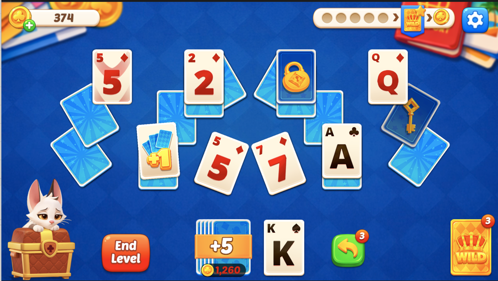
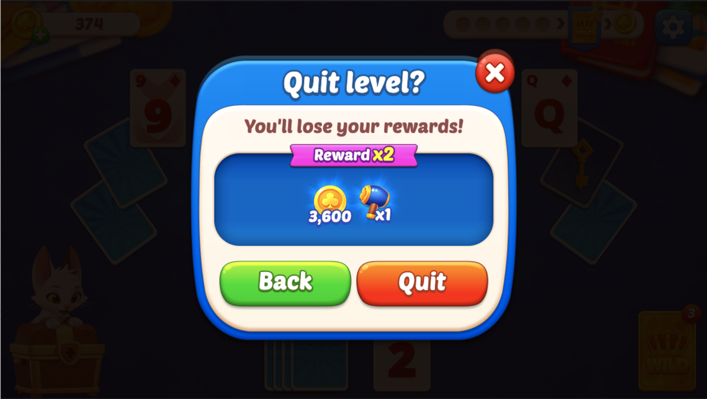
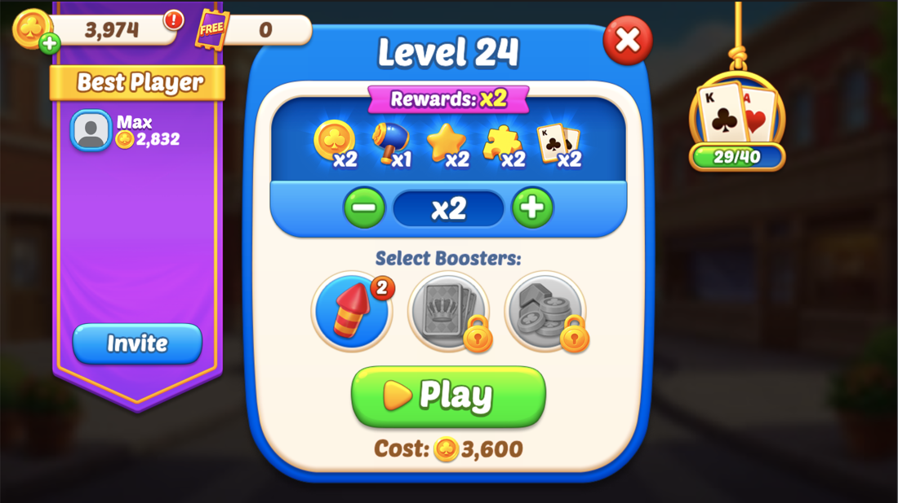
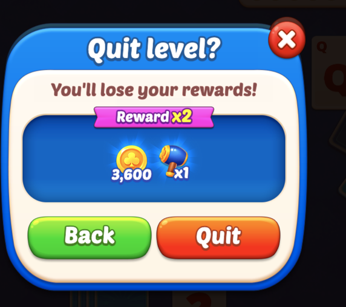
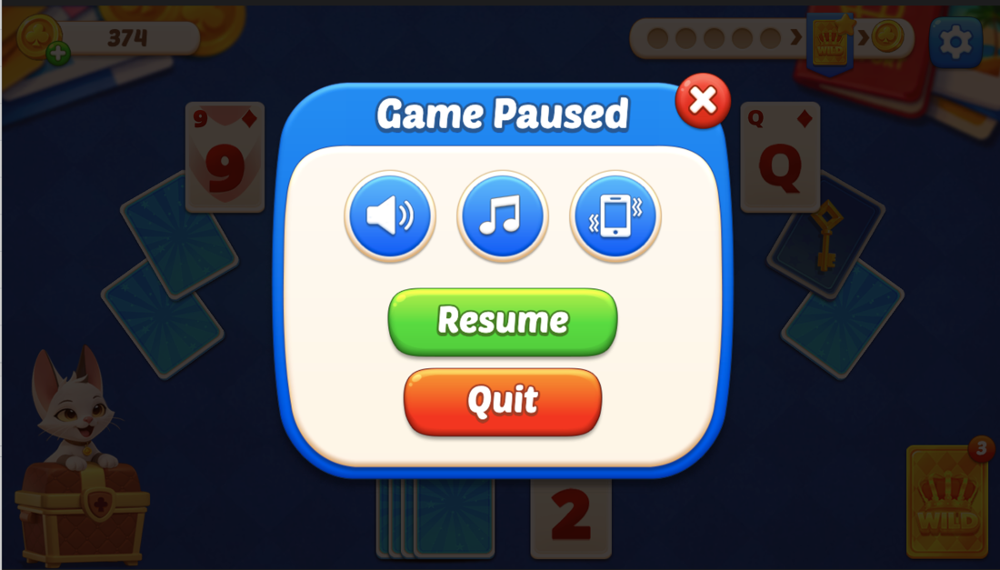
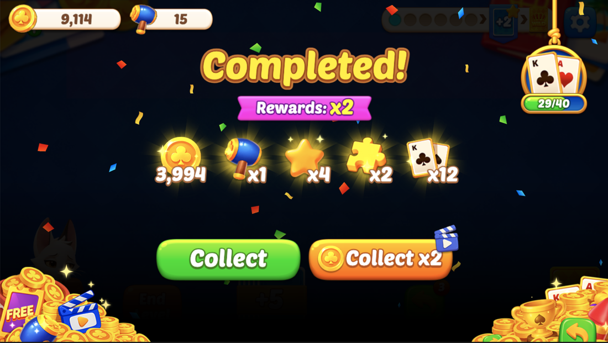

판에 실패하면 레벨이 오르지 않아 유저는 반드시 다시 플레이해야 함. 그런데 그만두기를 누르면 로비로 빠져나가고, 거기서 30.1%가 돌아오지 않음. 그만두기 팝업에서 곧바로 프리레벨 팝업을 띄워 로비 경유를 없앰. 전면 광고는 두 경로 모두 그대로 재생하고, 광고가 끝난 뒤 떨어지는 곳만 바꿈.
실패한 판은 레벨이 오르지 않음. 클리어해야만 레벨이 +1되고, 실패하면 같은 레벨에 머무름. 즉 유저는 진행하려면 반드시 한 판을 더 해야 하는 상태로 판을 마침.
그런데 지금은 그만두기를 확정하면 로비로 나감. 진행이 막힌 채 로비에 놓인 유저의 30.1%가 다시 들어오지 않음.
| 판 종료 후 | 10분 내 다음 판 진입 | 2분 내 진입 | 재진입까지 중앙 소요 |
|---|---|---|---|
| 클리어 | 93.7% | 88.7% | 22초 |
| 실패 | 69.9% | 59.5% | 8초 |
2026-07-25 ~ 08-01 서구권(NA+EU) 실측. 실패 3,151판 · 583명. 2분 내 진입률과 소요 시간은 전체 기준. 재진입 소요가 실패 쪽이 더 짧은 것은, 돌아오는 유저는 로비에서 곧장 다시 진입하기 때문임. 로비 체류가 길어서 새는 것이 아니라 로비로 나가는 순간 이탈함.
인게임 판매 지면과 실패 선언 방식은 손대지 않음. 덱이 떨어져도 판은 유지되고 추가 덱·와일드카드·언두를 계속 살 수 있으며, 유저가 엔드레벨 버튼을 눌러야 판이 끝나는 구조는 그대로 둠. 이 구조는 이미 잘 작동함 — 추가 덱 사용이 전체 판의 41.6%이고, 그 끝에 남는 실패는 4.1%뿐임.
바꾸는 것은 그만두기를 확정한 다음 어디로 가는가 하나임.
| 단계 | As-Is | To-Be |
|---|---|---|
| 덱 소진 | 판 유지 · 아이템 구매 가능 (변경 없음) | |
| 엔드레벨 버튼 | 그만두기 팝업 노출 (변경 없음) | |
| 팝업 버튼 | 뒤로 / 그만두기 / 닫기 | 뒤로 / 다시 하기 / 로비로 / 닫기 |
| 그만두기 확정 | 로비 진입 | 다시 하기 → 로비를 거치지 않고 프리레벨 팝업 노출 로비로 → 기존과 동일 |
| 재진입 | 로비에서 플레이 버튼 → 프리레벨 팝업 | 프리레벨 팝업에서 배수·부스터 선택 후 즉시 시작 |
| 입장료 | 새 판이므로 정상 지불 (변경 없음) | |
| 배정 맵 | 실패한 맵이 아니라 새 맵 (변경 없음) | |
fail_streak·fail_spiral이 작동해 더 쉬운 티어가 나올 수 있음.
| 지표 | As-Is | To-Be | 산출 |
|---|---|---|---|
| 실패 후 10분 내 다음 판 진입률 | 69.9% | 85% | 2300 result=fail 다음 2100 발생 비율 — 서구권(NA+EU) |
| 다시 하기 선택 비율 | — | 60% 이상 | 2223 ÷ 2220 |
| 주당 회수 판수 | — | +475판 | 서구권 실패 3,151 × 15.1%p |
| 실패 유저 당일 재방문 | 측정 시작 | 하락 없음 | 가드레일 |
판정 기준은 서구권(NA+EU)임 — 비서구권은 국가당 유저가 한 자릿수라 방향이 제각각이고 전체 평균을 끌어내림. 서구권 기준 클리어 후 93.7% · 실패 후 69.9%(실패 3,151판 · 583명)이고, 목표 85%는 그 사이로 잡음. 로비 마찰만 제거하는 변경이라 클리어 수준까지 도달하지는 않는 것으로 봄. 전체 기준으로도 93.5% 대 68.4%로 방향이 같음.
| 항목 | 확정 |
|---|---|
| 버튼 구성 | 뒤로(녹색) / 다시 하기(오렌지) / 로비로(파란 홈 아이콘) / 닫기 X — 레드 나가기는 사라짐 |
| 기본 강조 | 다시 하기 — 중앙 · 가장 넓은 폭(240) |
| 진입 경로 | 엔드레벨 버튼과 일시정지 팝업 Quit 두 경로 모두 동일 적용 |
| 덱 잔량 게이팅 | 하지 않음 — 판을 끝낸 유저의 92.4%가 덱 소진 상태, 자발적 이탈은 0.1% |
| 재도전 맵 | 새 맵 (기존 배정 로직) |
| 입장료 | 새 판 기준 정상 지불 |
| 데일리 기프트 팝업 | 다시 하기 경로에서는 띄우지 않음 |
| 전면 광고 | 다시 하기 · 로비로 두 경로 모두 기존대로 재생. 광고가 끝난 뒤 목적지만 갈림 — 광고 노출 수·매출 영향 없음 |
| 문구 | 타이틀·설명 현행 유지. 다시 하기 버튼만 T_RETRY 신설 |
| 노출 제어 | 시트 상수를 두지 않음 — 복구는 클라 빌드 롤백 |
| 튜토리얼 | 다시 하기 미노출 |
| 아트 | 버튼 신규 제작 및 3버튼 배치 설계를 UI/UX 디자이너에게 요청 |
| 신규 문자열 | T_RETRY 1건 — 나머지는 기존 키 재사용 |
같은 팝업이지만 여는 곳이 둘임. 두 경로가 각자 거의 같은 코드를 들고 있어서(ViewGame.onClickEndLevel / ViewGame.onClickOption) 한쪽만 고치면 다른 쪽이 옛 흐름으로 남음. 두 경로 모두에 다시 하기가 나와야 하며, 이 기회에 두 호출부를 하나로 합침.
실패한 판을 마치고 다음 판에 들어가기까지 유저가 실제로 보는 화면임. 바뀌는 것은 광고 다음이 로비냐 프리레벨 팝업이냐 하나뿐임 — 전면 광고는 두 경로 모두 기존대로 재생됨.


game_quit 지면 · 라이브 ON
빠지는 것은 로비 화면 · 데일리 기프트 팝업 · 로비 전환 연출 · 플레이 버튼 터치 네 가지임. 전면 광고는 그대로 재생되므로 광고 노출 수와 매출은 영향을 받지 않음 — 광고가 끝난 뒤 어디로 떨어지느냐만 바뀜.
좌측은 현행 실제 화면, 우측은 To-Be 목업임. 목업의 색은 실제 스프라이트 값을 따랐으나(패널 #fff8ec, 녹색 #00d900, 오렌지 #ffb600→#ff7800, 블루 #0097ff) 확정 시안이 아니며 버튼 이미지와 최종 배치는 디자이너가 정함.

(±124, −155)에 고정. 우측 레드가 유일한 탈출구임.| T_QUIT_LEVEL_TITLE (현행 유지) | Quit level? |
| T_QUIT_LEVEL_DESC (현행 유지) | You’ll lose your rewards! |
| T_BACK (재사용) | Back |
| T_RETRY (신규 — 다시 하기 버튼) | Retry |
| 로비로 (아이콘 단독) | — |
아래 크기·스프라이트는 기존 팝업에서 뽑은 기준값이며 확정 시안이 아님. 최종 버튼 이미지와 3버튼 배치는 UI/UX 디자이너가 신규 제작함 — 아래 아트 요청 항목 참고.
| 버튼 | 크기 | 스프라이트 | 9-slice (L/R) | 핸들러 | 문자열 |
|---|---|---|---|---|---|
| 뒤로 유지 | 200×96 | UI_btn_main_green.png | 65 / 64 | onClickBack | T_BACK (재사용) |
| 다시 하기 신규 | 240×96 | UI_btn_main_orange.png | 65 / 64 | onClickRetry | T_RETRY (신규 1건) |
| 로비로 신규 | 100×100 | UI_btn_blue02.png + 아이콘 UI_Icon_home.png | — | onClickGoLobby | 없음 (아이콘 단독) |
| 닫기 X 유지 | 74×76 | UI_btn_close01.png | — | onClickClose → 뒤로와 동일 | 없음 |
공통 — 모든 버튼은 기존 규격을 따름: cc.Button transition SCALE(zoom 1.1 / 0.1초), pressed rgb(211,211,211), ClickSound 컴포넌트 부착, 라벨은 cc.Label + cc.LabelOutline + cc.LabelShadow + Localization. 텍스트 외곽선 색은 버튼 색을 따라감 — 녹색 rgb(53,128,8), 오렌지 rgb(169,52,29), 폰트 44.
현재 나가기 팝업의 버튼 두 개는 Contents 아래 절대좌표 (±124, −155)에 박혀 있어서 세 번째 버튼을 넣거나 하나를 숨기면 정렬이 깨짐. 승리 결과 팝업이 이미 같은 문제를 풀어 놓았으므로 그 구조를 그대로 가져옴.
| 항목 | 승리 결과 팝업(기존, 참고) | 나가기 팝업(적용) |
|---|---|---|
| 컨테이너 | Contents/Btns 795×200 @ (0, −190) | Contents/Btns @ (0, −155) |
| 정렬 | 수평 cc.Layout, spacingX 10 | 수평 cc.Layout, spacingX 12 |
| 버튼 구성 | 녹색 310 + 오렌지 310 + 파란 정사각 100 | 녹색 200 + 오렌지 240 + 파란 정사각 100 |
| 버튼 수 가변 처리 | homeButtonNode.active 토글 + paddingLeft 55 / 0 보정 | 동일 방식 — 다시 하기·로비로 active 토글 + paddingLeft 보정 |
| 상황 | 뒤로 | 다시 하기 | 로비로 | 비고 |
|---|---|---|---|---|
| 기본 | 노출 | 노출 · 강조 | 노출 | 3버튼 |
| 튜토리얼 진행 중 | 노출 | 숨김 | 숨김 → 기존 레드 Quit | 튜토리얼은 실패로 끝나지 않음 |
| 덱·언두·와일드가 남은 판 도중 | 노출 | 노출 | 노출 | 게이팅하지 않음 — 해당 케이스 0.1% |
| 보유 골드 < 입장료 | 노출 | 노출 | 노출 | 누르면 프리레벨 팝업의 기존 부족 처리(충전 안내). 취소 시 로비 |
| Quick Next Loop v2 켜짐 | 노출 | 노출 | 노출 | 다시 하기가 프리레벨 팝업을 건너뛰고 곧장 판 시작 — 아래 콜아웃 |
| 전면 광고 | 없음 | 기존대로 노출 | 기존대로 노출 | 두 분기 모두 LogITPosition.game_quit 유지 — 광고 종료 후 목적지만 갈림 |
| 일시정지 팝업 경유(경로 2) | 경로 1과 완전히 동일 | 호출부가 별도라 연결 누락 주의 | ||
| 항목 | 처리 |
|---|---|
| 팝업 등장·퇴장 | 기존 Popup_default_show 클립 그대로. 신규 애니메이션 없음 |
| 버튼 클릭음 | 기존 ClickSound 공통 컴포넌트. 다시 하기 전용 음색 없음 |
| 다시 하기 강조 연출 | 넣지 않음. 반짝임·펄스는 신규 애니메이션이 필요하고, 배치와 색만으로 위계가 이미 섬. 뱃지·라벨 장식도 넣지 않음(문구 추가 발생) |
| 화면 전환 연출 | 다시 하기 경로에서는 덤불 전환(showBushView)을 생략하고 팝업 페이드아웃 → 프리레벨 팝업 페이드인으로 이음. 로비를 거치지 않는데 전환막이 끼면 단축 효과가 줄어듦 |
버튼이 2개에서 3개로 늘고 위계가 셋으로 갈리므로, 버튼 이미지 신규 제작과 3버튼 배치 설계를 UI/UX 디자이너에게 요청함. 아래 기존 에셋은 색·톤·크기의 출발점으로만 참고함.
| 요청 항목 | 내용 | 참고 기준 |
|---|---|---|
| 다시 하기 버튼 (신규) | 주 행동. 셋 중 가장 강한 위계. 아이콘 동반 여부도 함께 제안 요청 | 승리 결과 팝업 UI_btn_main_orange.png (310×96) 톤 |
| 로비로 버튼 (신규) | 홈 아이콘 형태. 텍스트 없이 뜻이 통해야 함 | 승리 결과 팝업 홈 버튼 UI_btn_blue02.png + UI_Icon_home.png (100×100) |
| 3버튼 배치 설계 | 세 버튼의 폭 배분·간격·정렬. 팝업 패널 폭 608 안에 들어가야 하고, 버튼 하나가 빠졌을 때(튜토리얼) 중앙 정렬이 자연스럽게 무너지지 않아야 함 | 승리 결과 팝업 Contents/Btns 수평 cc.Layout 구조 |
| 뒤로 버튼 | 현행 유지가 기본. 신규 3버튼과 톤이 안 맞으면 함께 정리 요청 | UI_btn_main_green.png (기존 260×96) |
| 레드 나가기 버튼 | 튜토리얼에서 그대로 쓰므로 삭제하지 말 것 | UI_btn_main_red.png 유지 |
string_code신규 등록은 T_RETRY 1건뿐이며 시트·클라 반영까지 끝남. 타이틀·설명은 현행 문구를 그대로 두고 나머지도 기존 키를 씀. 새로 생기는 다시 하기 버튼만 전용 문구가 필요함 — 기존 T_PLAY(Play)는 새 판 시작이 아니라 재도전이라는 뜻을 담지 못함.
| 위치 | Key | kr | en | 처리 |
|---|---|---|---|---|
| 타이틀 | T_QUIT_LEVEL_TITLE | 레벨을 나가시겠어요? | Quit level? | 현행 유지 |
| 설명 | T_QUIT_LEVEL_DESC | 보상이 사라져요! | You’ll lose your rewards! | 현행 유지 |
| 좌측 버튼 | T_BACK | 뒤로 | Back | 재사용 |
| 중앙 버튼 (다시 하기) | T_RETRY | 다시 하기 | Retry | 신규 1건 — 시트·클라 반영 완료 |
| 우측 버튼 (로비로) | — | 아이콘 단독이라 문자열 없음 | ||
※ 등록하지 않음 — T_LOBBY·T_HOME. 로비로는 아이콘 단독이라 문자열이 필요 없음.
T_RETRY 10개 언어라이브 string_code 컬럼 순서 = Key · en · ar · es · pt · id · ru · fr · th · jp · kr. 아래 값을 그대로 넣으면 됨. 치환값 없음.
| 언어 | 값 | 영문 대비 길이 | 비고 |
|---|---|---|---|
| en | Retry | 기준 | — |
| ar | إعادة | 짧음 | 우횡서 — 아이콘을 붙이면 좌우 반전 확인 필요 |
| es | Reintentar | 2.0배 | — |
| pt | Repetir | 1.4배 | — |
| id | Ulangi | 1.2배 | — |
| ru | Ещё раз | 1.4배 | 동사형(“Повторить”)을 피해 성 구분이 없는 표현으로 잡음 |
| fr | Réessayer | 1.8배 — 최장 | 폭 검증 기준 언어 |
| th | ลองอีกครั้ง | 글자수는 길지만 폭은 보통 | 타이 문자는 위아래 결합이 있어 행간 잘림 확인 필요 |
| jp | もう一度 | 짧음 | — |
| kr | 다시 하기 | 짧음 | — |
string_code 시트에 T_RETRY 행 추가 후 10개 값 입력localization/{lang}.json 10종 동기화c1631dd1. 시트가 소스이므로 클라에서 직접 고치지 말 것Localization 컴포넌트를 붙이고 key를 T_RETRY로 지정 클라문구는 이미 게임에 들어가 있으므로, 클라는 키를 연결하기만 하면 됨. 번역 대기나 별도 반영 절차 없음.
cc.Label overflow SHRINK)로 처리 — 폭을 늘리면 패널 608 안에 세 버튼이 안 들어감.
이 기획은 서버 상태를 새로 만들지 않음. 다시 하기는 기존 gameEnd → gameStart 순서를 그대로 밟음. 신규 API 없음.
| 서버 상태 | 전이 조건 | 저장 · 갱신 값 |
|---|---|---|
| 진행 중인 판 없음 | 초기 상태 또는 gameEnd 수신 완료 | 유효한 gameId 없음 |
| 판 진행 중 | gameStart 수신 → gameId 발급 | gameId · stageId · betMultiplier · betGoldAmount |
| 판 종료 | gameEnd 수신 (isClear 참 또는 거짓) | 레벨 · 재화 · 데일리 진행도 정산 후 gameId 폐기 |
gameEnd 직후 gameStart가 짧은 간격으로 이어짐. 연속 호출을 어뷰징으로 막는 검증(호출 간격 제한 등)이 걸려 있다면 정상 흐름이 차단될 수 있으므로 확인이 필요함. 제한이 있다면 간격 기준을 완화하는 것이 아니라, gameEnd 완료 응답을 받은 뒤에만 gameStart를 보내는 순서 보장으로 해결함.
| 층 | 이 기획에서 | 의미 |
|---|---|---|
| 기간 | 없음 | 상시 기능이며 스케줄 창이 없음 |
| 회차 | 판 | gameId 하나가 회차 하나. 다시 하기는 새 회차를 여는 것이며 이전 회차를 잇는 것이 아님 |
| 쿨다운 | 없음 | 재도전 대기 시간을 두지 않음 |
| 상황 | 처리 |
|---|---|
| 보유 골드가 입장료보다 적으면? | 프리레벨 팝업의 기존 부족 처리를 그대로 따름(골드 충전 안내). 유저가 충전을 취소하면 로비로 보냄 |
| 다시 하기를 누른 시점이 데일리 리셋을 넘겼으면? | 새 회차이므로 리셋 이후 기준으로 진행됨. 직전 판의 데일리 태스크 진행도는 gameEnd에서 이미 정산이 끝난 상태라 영향 없음 |
| 그 사이 이벤트 기간이 끝났으면? | 프리레벨 팝업의 이벤트 보상 표시만 제거하고 판 진입은 허용함 |
| 튜토리얼 중이면? | 다시 하기 버튼을 노출하지 않음. 튜토리얼은 실패로 끝나지 않음 |
| 팝업을 띄운 채 앱이 백그라운드로 갔다 돌아오면? | 팝업 상태를 유지함. gameEnd가 이미 전송됐다면 중복 전송 가드(isQuitting)로 재전송을 막음 |
| 플랫폼이 토스면? | 동일하게 동작함. 데일리 리셋 경계만 플랫폼 기준을 따름 |
| 일시정지 팝업을 거쳐 들어왔으면? | 동일하게 동작함. 나가기 팝업 호출부가 두 곳(onClickEndLevel / onClickOption)이라 양쪽 모두에 다시 하기 콜백을 연결해야 함 |
| Quick Next Loop v2가 켜져 있으면? | 프리레벨 팝업이 존재하지 않으므로 다시 하기가 곧장 판을 시작함. 입장료도 v2 규칙(0)을 따름 — 아래 콜아웃 |
| 전면 광고가 나가기 지면에 붙어 있으면? | 두 경로 모두 기존대로 재생함. 광고 콜백이 끝난 뒤 다시 하기면 프리레벨 팝업, 로비로면 로비로 보냄 |
| 광고가 실패하거나 5초 안에 콜백이 안 오면? | 기존 폴백을 그대로 씀 — QUIT_AD_CALLBACK_TIMEOUT_MS 타임아웃 후 목적지 이동은 정상 수행. 광고 실패가 재도전을 막지 않음 |
ADPlayer.tryShowInterstitialAD(LogITPosition.game_quit, ...) 호출은 지금 위치에 그대로 두고, 콜백(proceedQuit)과 타임아웃 폴백 안에서만 다시 하기 / 로비로를 가름. 광고 노출 수·지면 분포가 그대로 유지되므로 SPEC-035와 조정할 것이 없음.
ViewCreator.showPopupGameEntry(stageId, onClose)를 호출함. 이 함수가 Quick Next Loop v1/v2를 내부에서 판정해 — v1이면 프리레벨 팝업, v2면 곧장 판 시작 — 두 버전 모두에서 자동으로 맞음. gameEnd의 betGoldAmount도 기존 isPrelevelPopupOpen 분기를 그대로 씀.
| 파일 | 변경 |
|---|---|
PopupQuitLevel.prefab | 버튼 두 개의 절대좌표 배치를 Contents/Btns 수평 cc.Layout(spacingX 12)으로 교체하고 파란 정사각 홈 버튼을 추가. 승리 결과 팝업의 Contents/Btns 구조를 그대로 따름 |
PopupQuitLevel.ts | 버튼 구성을 뒤로 / 다시 하기 / 로비로 / 닫기로 확장. onConfirmQuit 단일 콜백을 onClickRetry · onClickGoLobby 두 갈래로 분리. isQuitting 가드는 두 갈래가 공유 |
ViewGame.ts onClickEndLevel() | 확정 콜백 안의 gameEnd 전송은 두 경로가 공유함. 이후 분기에서 다시 하기면 showViewLobby 대신 ViewCreator.showPopupGameEntry(nextStageId, ...)를 호출 |
ViewGame.ts onClickOption() 누락 주의 | 일시정지 팝업 → Quit 경로가 나가기 팝업을 별도로 한 번 더 띄우고 있고 확정 로직이 거의 그대로 복제돼 있음. 다시 하기 콜백을 여기에도 연결해야 하며, 이 기회에 두 호출부의 공통 로직을 하나로 합칠 것 |
| 프리레벨 팝업 호출 | 직접 열지 말고 ViewCreator.showPopupGameEntry()를 부를 것. 이 함수가 Quick Next Loop v1/v2를 내부에서 갈라줌 |
ViewGame.ts 전환 처리 | 다시 하기 경로에서는 needShowDailyGift를 설정하지 않음. 로비를 거치지 않으므로 데일리 기프트 팝업이 판 흐름을 끊지 않게 함. 덤불 전환(showBushView)도 생략 |
| 콘텍스트 전환 | 다시 하기 경로에서도 switchToContextSolo를 동일하게 호출함 |
| 전면 광고 분기 | ADPlayer.tryShowInterstitialAD(LogITPosition.game_quit, ...) 호출은 현재 위치 그대로 유지. 분기는 콜백 proceedQuit 안에서만 — 다시 하기면 프리레벨 팝업, 로비로면 showViewLobby. 타임아웃 폴백도 동일하게 두 갈래를 타야 함 |
| 튜토리얼 분기 | 튜토리얼 진행 중에는 다시 하기·로비로를 숨기고 기존 레드 나가기 버튼으로 2버튼 구성으로 동작. paddingLeft 보정으로 중앙 정렬 유지 |
변경 없음. 위 상태 모델 표의 연속 호출 검증 여부만 확인하면 됨.
| 테이블 | 필드 | 값 | 설명 |
|---|---|---|---|
string_code | T_RETRY | 문자열 | 이 기획의 유일한 시트 작업. 중앙 버튼 문구 · 10개 언어 등록. 값은 ② 문구 · string_code 표 그대로 |
기존 값을 참고로 쓰는 상수 — is_interstitial_ad_quit_open(현재 1), is_quick_next_loop_open(현재 0) · is_prelevel_popup_open(현재 1) · is_reward_on_result_open(현재 0). 이 기획은 이 값들을 바꾸지 않음. 읽기만 함.
| 코드 | 시점 | 필드 | 출처 |
|---|---|---|---|
2220_GAMEPLAY_END_SURE | 그만두기 팝업 노출 (기존) | difficulty_tier · seed | 클라 |
2221_GAMEPLAY_END_SURE_NO | 뒤로 · 닫기 X (기존) | difficulty_tier · seed · close_type 추가(back / x) | 클라 — 두 버튼이 한 코드로 찍혀 분리되지 않으므로 구분 필드를 신설함 |
2222_GAMEPLAY_END_SURE_YES | 로비로 선택 (의미 변경) | difficulty_tier · seed | 클라 |
2223_GAMEPLAY_END_SURE_RETRY | 다시 하기 선택 (신규) | difficulty_tier · seed · remaining_card_count | 클라 — 판 종료 시점의 화면 상태에서 얻음 |
2100_GAMEPLAY_START | 판 시작 (기존) | position에 retry 값 추가 | 클라 — 진입 경로 구분용. 기존 값은 lobby |
2222 + 2223을 합쳐야 기존 2222와 같은 모수가 됨. BQ 조인 키는 seed(= stage_id)를 사용함.
| 확인 | 기준 |
|---|---|
| 실패 후 10분 내 다음 판 진입률 | 서구권 69.9% → 85% (판정 기준) |
| 다시 하기 선택 비율 | 2223 ÷ 2220 60% 이상 |
position=retry 판의 클리어율 | 기존 판과 차이 없을 것 |
| 실패 유저 당일 재방문율 | 하락 없을 것 — 가드레일 |
| 판당 입장료 소모 | 판수 증가에 비례할 것 |
배포 후 7일 시점에 판정함. 실패 판이 전체의 4.1%라 표본이 작으므로, 진입률은 일자별이 아니라 기간 누적으로 봄.
| 파트 | 항목 |
|---|---|
| 기획 | string_code 시트에 T_RETRY 등록 (10개 언어)localization JSON 동기화까지 반영됨(c1631dd1) |
| 기획 | 디자이너 시안 확정 후 버튼 크기·간격을 스펙 표에 반영 |
| 아트 | 다시 하기 · 로비로 버튼 신규 제작 + 3버튼 배치 설계 (② 아트 요청 참고) |
| 아트 | 시안 확정 후 프리팹 버튼 배치를 cc.Layout으로 교체 |
| 클라 | PopupQuitLevel 버튼 구성 확장 · 콜백 분리 · 문구 스위치 분기 |
| 클라 | 다시 하기 경로에서 ViewCreator.showPopupGameEntry() 호출 (프리레벨 팝업 직접 호출 금지) |
| 클라 | 나가기 팝업 호출부 두 곳(onClickEndLevel · onClickOption) 공통화 후 양쪽에 콜백 연결 — remaining_draw_count 등 로그 필드도 함께 맞출 것(현재 7.6% 미기록) |
| 클라 | 다시 하기 경로에서 데일리 기프트 팝업 · 덤불 전환 미노출 처리 |
| 클라 | 전면 광고 호출을 로비로 분기 안으로 이동 |
| 클라 | 로그 2223 신설 · 2100 position에 retry 추가 · 2221에 close_type 추가 |
| 서버 | gameEnd 직후 gameStart 연속 호출 검증 여부 확인 |
| QA | 다시 하기 → 프리레벨 팝업 → 판 시작까지 정상 진입 |
| QA | 일시정지 팝업 → Quit 경로에서도 동일하게 3버튼이 뜨고 다시 하기가 동작 |
| QA | 골드 부족 상태에서 다시 하기 선택 시 충전 안내 · 취소 시 로비 이동 |
| QA | 다시 하기 경로에서 데일리 기프트 팝업 · 덤불 전환이 뜨지 않음 |
| QA | 데일리 리셋 경계를 넘겨 다시 하기 시 정상 진행 |
| QA | 팝업 노출 중 백그라운드 전환 후 복귀 시 중복 정산 없음 |
| QA | 다시 하기 · 로비로 두 경로 모두 전면 광고가 정상 재생되고, 광고 종료 후 목적지가 각각 프리레벨 팝업 / 로비 |
| QA | 광고 로드 실패 · 5초 타임아웃 상황에서도 다시 하기가 프리레벨 팝업으로 정상 진입 |
| QA | Quick Next Loop v2를 켠 상태에서 다시 하기가 프리레벨 팝업 없이 곧장 판 시작 · 입장료 0 |
| QA | 튜토리얼 중에는 다시 하기가 뜨지 않음 |
| QA | 프랑스어 · 러시아어 · 타이어에서 Retry 버튼 문구가 넘치거나 잘리지 않음 |
| QA | 10개 언어 전부에서 T_RETRY가 키 문자열이 아닌 번역문으로 표시됨 |
시트 킬스위치를 두지 않음. 문제가 생기면 클라 빌드 롤백이 유일한 복구 수단임. 서버 상태를 새로 만들지 않고 기존 gameEnd → gameStart 순서를 그대로 밟으므로 롤백 시 정리할 데이터가 없음. 배포 시점과 감시 기간은 빌드 롤백에 걸리는 시간을 감안해 잡음.

